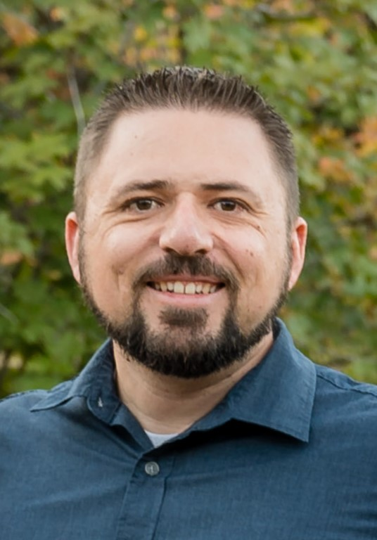

Mike Hyde | WDD 130
Hi! My name is Mike Hyde and I am studying Software Development. I am originally from Phoenix, AZ where I did pest control for over 10 years. In 2022, I began my career as a DevOps Engineer and moved my family to Hyrum, UT. I began with BYU Pathways in January 2024 to continue my journey. I enjoy playing the piano and video games. My current favorite game is Satisfactory.